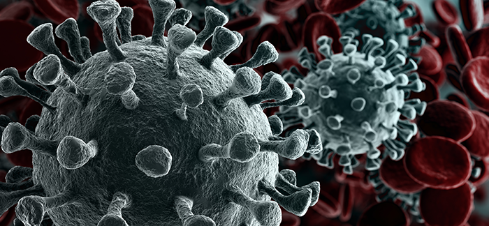

Folha informativa sobre COVID-19
A COVID-19 é uma doença infecciosa causada pelo novo coronavírus (SARS-
CoV-2) e tem como principais sintomas febre, cansaço e tosse seca. Alguns
pacientes podem apresentar dores, congestão nasal, dor de cabeça, conjuntivite,
dor de garganta, diarreia, perda de paladar ou olfato, erupção cutânea na pele ou
descoloração dos dedos das mãos ou dos pés. Esses sintomas geralmente são
leves e começam gradualmente. Algumas pessoas são infectadas, mas
apresentam apenas sintomas muito leves.

A maioria das pessoas (cerca de 80%) se recupera da doença sem precisar de
tratamento hospitalar. Uma em cada seis pessoas infectadas por COVID-19 fica
gravemente doente e desenvolve dificuldade de respirar. As pessoas idosas e as
que têm outras condições de saúde como pressão alta, problemas cardíacos e
do pulmão, diabetes ou câncer, têm maior risco de ficarem gravemente doentes.
No entanto, qualquer pessoa pode pegar a COVID-19 e ficar gravemente doente.